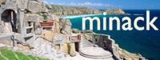

Entertainment in Penzance
Events in and around Penzance
Every week there are plenty of events to keep you amused happening in the wider Penzance area. So many that we have created a dedicated website in an easy to use format.
Find out whats happening on West Cornwall Events
Cinema & Visual Performance
- Savoy Cinema Penzance (01736 363330) The Savoy Cinema, operated by Merlin Cinemas, shows the latest hollywood & independent films. Read More |
|
- Minack Theatre (01736 810181) The Minack Theatre is an open-air performance space, constructed into the cliff face. Read more |
 |
- The Acorn Theatre (01736 365520) The Acorn Theatre is a independently run venue showcasing music, film, comedy & theatre. Read More |
Night Clubs & Live Music Venues
Penzance has a rich and varied night life. The town has two 'proper' night clubs (Sound Night Club & The Barn Club), and a variety of pubs & bars offering live music, most notably The Studio Bar which promises live music every night. Music played in the towns night spots includes Chart, Rock, Dance, Reggae, Acoustic, Hard House, Heavy Metal. Most club nights are promoted on flyers around the town, alternatively you can contact the clubs direct.
For info on some of the areas live bands & performers, please visit the arts & music section.
- The Studio Bar (01736 369724) Hidden away in Bread Street, The Studio Bar promotes free live entertainment seven nights a week. Read More |
|
- The Barn Club (01736 365754) The Barn work hard to bring the biggest and brightest acts to West Cornwall. Read More |
|
- Sound (01736 331211) Sound night club is the first and last nightclub in the country, situated in downtown Penzance. Read More |
|
- Matt's Bar (07546 999118) Matt's Bar offers live DJ sets every weekend, ranging from reggae to hard house. Free entry. |